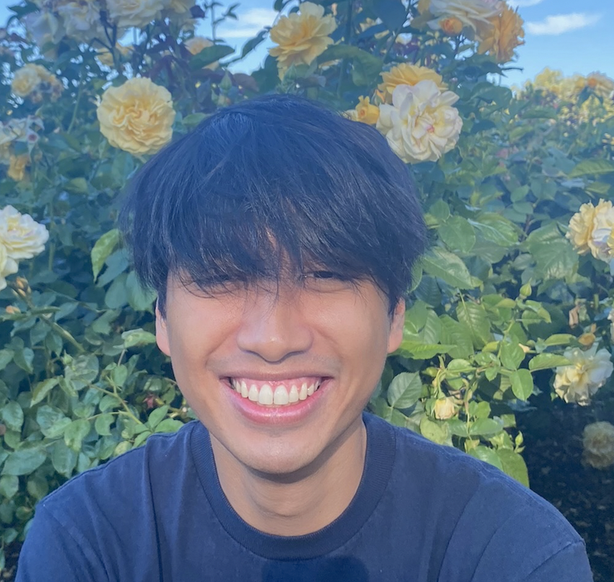

I'm a software engineer committed to impactful, human-centered solutions.

I'm currently at Stanford pursuing my Master's in Computer Science with a concentration in Human-Computer Interaction.
Writing code motivates me to create positive change. Yet, building technology has complex consequences, and it's important to keep in mind the ethical implications and (often unintentionally!) harmful design choices that shape technology's influence. Within HCI, I'm interested in empowering user agency through accessible design and building trust and safety into the digital world.